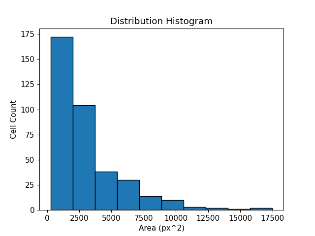
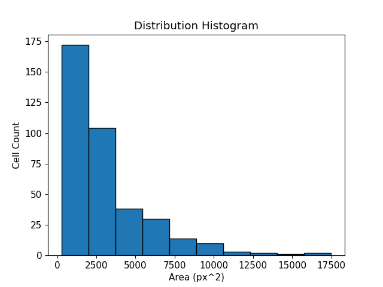
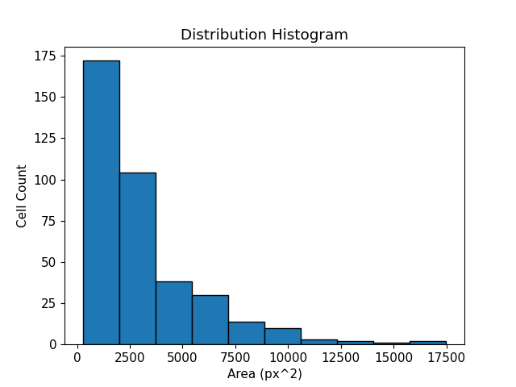

Gallery
 

🏢 Organizations -> Dr. Tang's Mechanobiology Lab -> Large Field Cell Object Detection
September 2023
Given a diverse spectrum as to what is considered a cell in a large image taken by our lab microscope, developing a computer vision program that used Canny and Sobel edge detection was not enough. Taking what I learned from the Machine Intelligence Lab with YOLOv5 object detection, I transfered my knowledge to the Mechanobiology Lab. By splitting the image into 40 smaller subsections, I was able to acquire 1280 samples to train the YOLOv5 model. This project is still a work in progress but it has shown promising results and scalability.
By carefully framing the detection box around the cell, I utilized its width and height to calculate the circular area of the cell and compile a detailed report including the position of the cell.
From feeding the raw image to train the AI model and getting error or only 50% recall, by cutting up the image I was able to significantly improve the F1-Score of the model to 93%.
As the python script is written, it allows for singular and multiple image processing. Whether it is by iterating through a directory or simply parsing one image, the script allows for dynamic sample size analysis.
